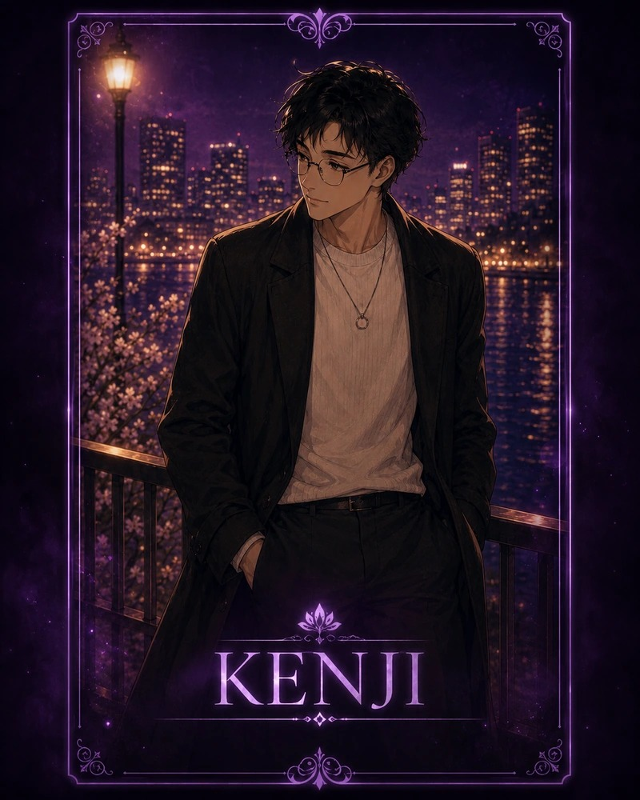

Affection0
Route Stat0
Self Respect0
Tommy Gravity0
Tommy Honesty0
Tap the dialogue box or Next to advance text.
Enter the name you want the boys and friends to call the main character. Canon/default name is Airi.
This replaces visible “Airi” dialogue text with your chosen name.
Pick a route. Each route starts with a short character opening before the choices begin.
20 save slots. Saves are stored in this browser with localStorage.
Play scenes to unlock route CGs, character shots, interruptions, bad endings, and secret endings.
Airi thought love was enough. It never was. This non-canon route simulator lets you test the six routes, unlock endings, collect CGs, and watch Tommy ruin things with suspicious efficiency.
The bones are already here: Ren’s clarity, Harrison’s peace, Marcus’s heat, Hiroshi’s temporary sparkle, Kenji’s quiet home, and Tommy’s longest maybe. V5.7.14 keeps the route mechanics intact, preserves the Ren Osaka asset reuse, adds Marcus bridge scenes, adds Ren’s good-terms bittersweet ending, and updates the route/menu/CG asset mapping in a controlled pass.
Finalization pass: Marcus pacing bridges, Ren good-terms bittersweet ending, friend-council check-ins, route-card/menu isolation, and controlled asset replacements.
Ultra Hidden File
A route that should not exist can only open after the game knows you survived the truth first.
Language can be switched between English and Japanese. The Japanese story script is structured as a separate duplicate script so it can be fully translated instead of patched line-by-line.

Quiet • Familiar • Home
His picture is now viewable. The secret card will stay revealed on the main menu and route select from now on.
Ending Unlocked